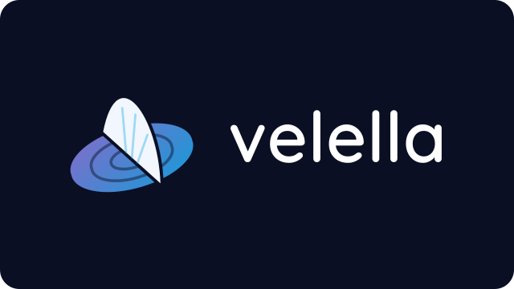
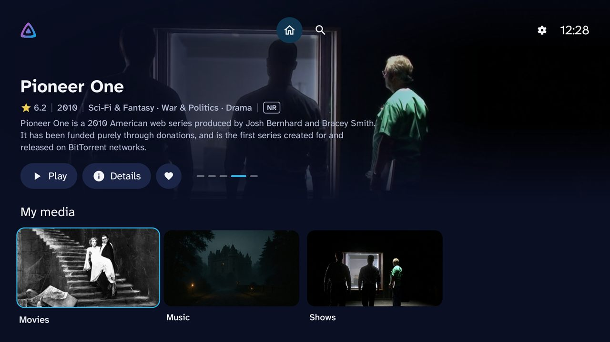
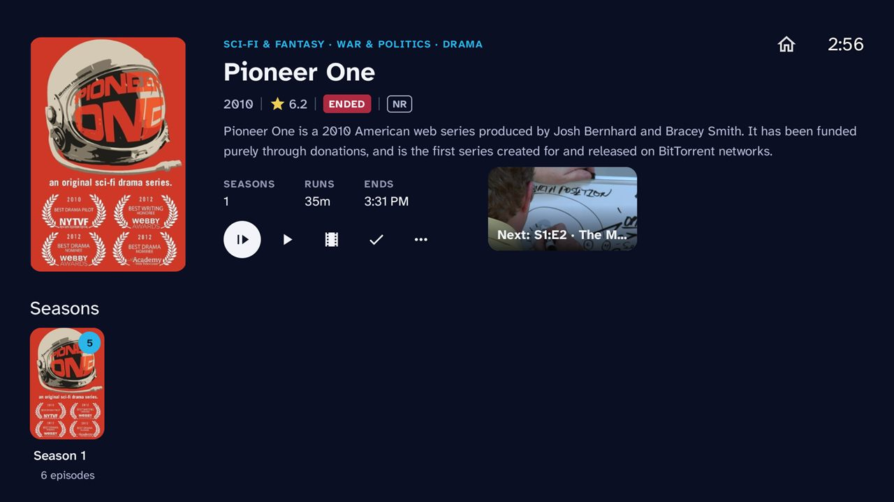
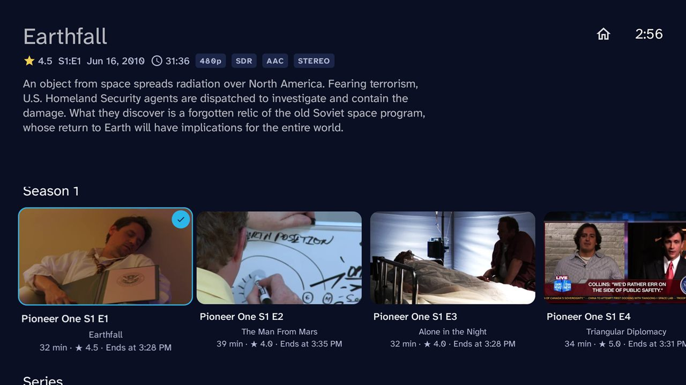
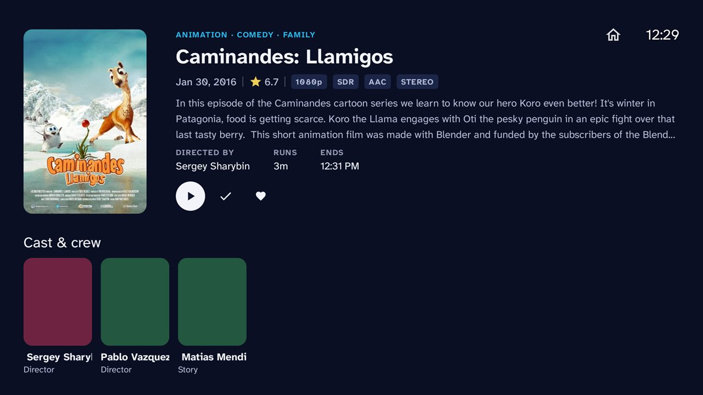
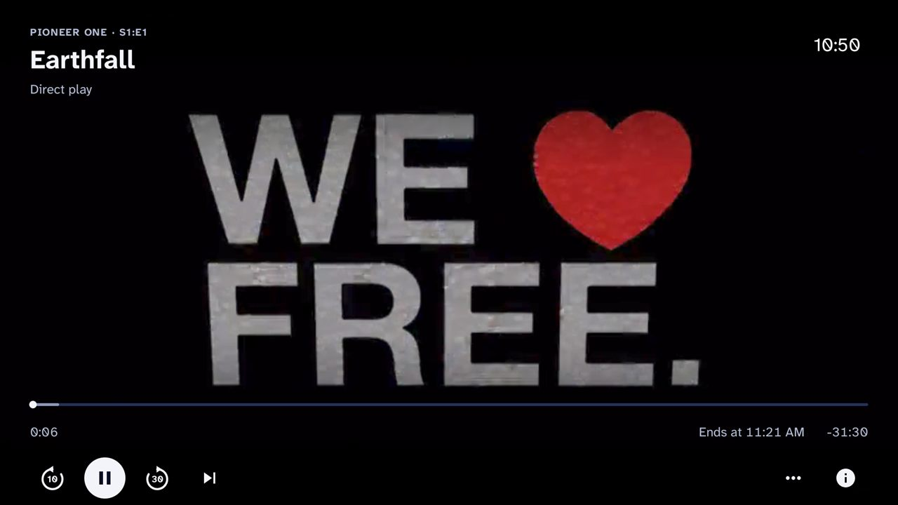
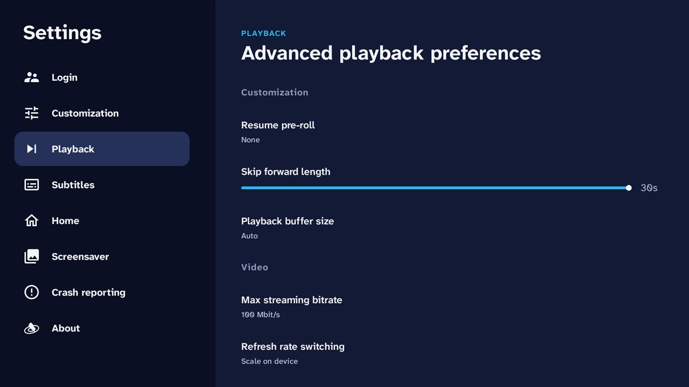
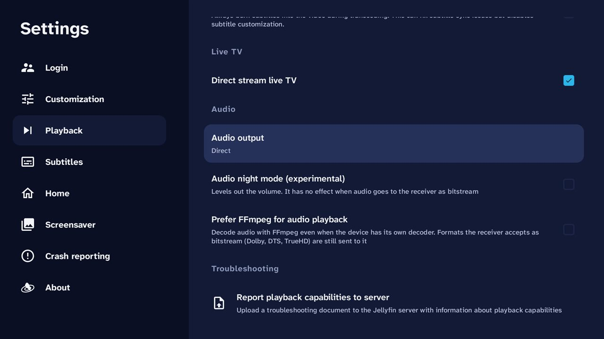
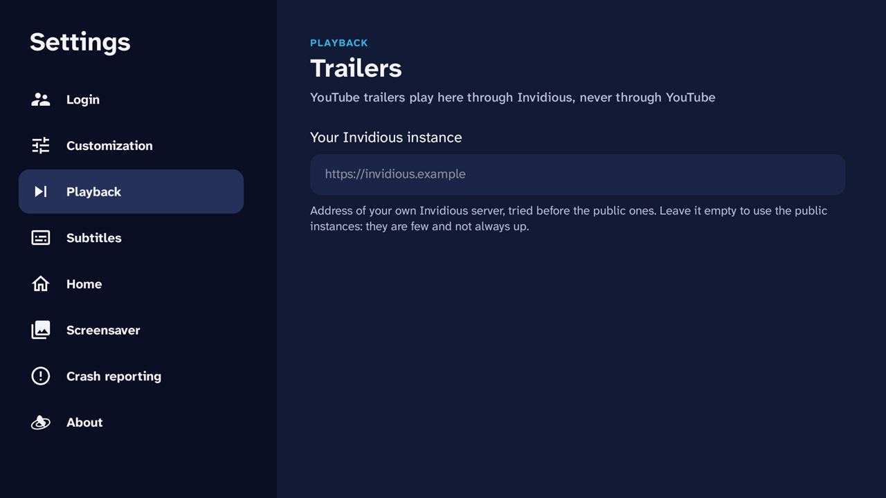

Velella
A de-Googled Jellyfin client for the NVIDIA Shield TV, every model from 2015 to the 2019 Pro.
What is different
Velella starts from the official Jellyfin for Android TV app and reworks it for one family of devices: the Shield. Playback leans on the Shield's hardware and your receiver, the interface is quieter, and nothing in it talks to Google. It installs next to the official app, so you can keep both.
No Google services
No Play Services, Firebase, Play Core or Cast SDK, and a build check fails if one ever slips in. The same APK runs on stock Shield software and on GMS-free AOSP or LineageOS builds.
Made for every Shield
The 2015, 2017 and both 2019 models: Android 11 or later, ARM only (64-bit, plus 32-bit for the 2019 tube), with a baseline profile so the app starts fast even when sideloaded.
Hardware playback first
Hardware decoders before software ones, and the server converts what the Shield can't decode, such as AV1. Refresh-rate switching is on by default and keeps the native resolution.
Sound for your receiver
Dolby Digital, Dolby Digital Plus, DTS and TrueHD go to the receiver as bitstream whenever it takes them. On TV speakers, an optional night mode evens out the volume.
HDR that fits your TV
The Dolby Vision profile 7 workaround applies only on TVs that report Dolby Vision, so HDR10 TVs get HDR10. You can override the formats your display reports.
Recovers on its own
When a stream fails, the player tries again from the same spot with a lighter stream: first without direct play, then converted by the server. A live channel that won't start gets the same retries.
Series without friction
A Next card on the series page plays the next episode, which keeps the audio and subtitle language of the last one. Skip intros, recaps and credits with one press, and call the button back if you missed it.
Trailers without YouTube
Trailers play inside the app through Invidious, never through YouTube: your own instance first, then public ones. Nothing is fetched until you press the trailer button.
A calmer interface
Night-blue themes with one accent colour, a full-width spotlight on the home screen, a lighter default home, type you can read from the sofa and a focus you can always find.
Live TV that picks up
The guide opens on the channel you watched last, and the server's tuner is freed as soon as you leave a channel.
Your data stays home
No analytics and no tracking. Crash reports, if you leave them on, go only to your own Jellyfin server.
Updates from GitHub
No store needed: the app checks GitHub Releases by itself, or you can follow the repository with Obtainium.
Screenshots
Taken on the Android TV emulator at 1080p with the Jellyfin demo server.








Install
Velella is sideloaded: it is not on Google Play, F-Droid or any other store. You need a Jellyfin server.
- Download the APK from the latest release, or add
https://github.com/miracle091/velellato Obtainium. - Install it on the Shield with a file manager, or over ADB:
adb install velella-v<version>.apk. - Open Velella, pick your server and sign in. From then on it checks for new releases by itself.
The wiki covers installation, features, building and the FAQ.